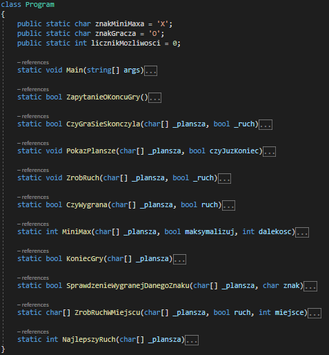
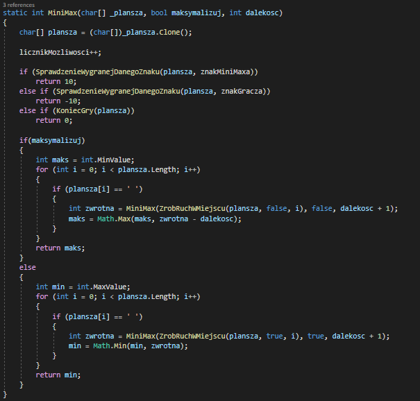
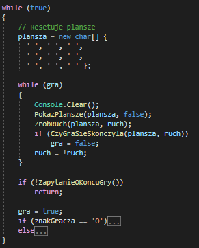
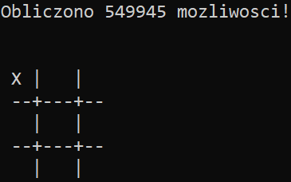

Algorytm MiniMax
MiniMax w konsoli na przykladzie gry kolko i krzyzyk - GithubMinimax (czasami minmax) – metoda minimalizowania maksymalnych możliwych strat. Alternatywnie można je traktować jako maksymalizację minimalnego zysku (maximin). Wywodzi się to z teorii gry o sumie zerowej, obejmujących oba przypadki, zarówno ten, gdzie gracze wykonują ruchy naprzemiennie, jak i ten, gdzie wykonują ruchy jednocześnie. Zostało to również rozszerzone na bardziej skomplikowane gry i ogólne podejmowanie decyzji w obecności niepewności.
Algorytm jest w kodzie z samą grą cały kody gry i algorytmu jest zrobiony najgorzej na świecie (ale działa ;) ).
Algorytm MiniMax to algorytm który jest jedną funkcji które się rekurencyjnie powtarza aż do końca miejsc na planszy albo kiedy któs wygrywa wtedy zwraca określone punkty i wybierana jest najlepszy wynik dzięki któremu Minimax wykonuje swój ruch.
Sama gra to "Kółko i krzyzyk" jest ona banalna do zrobienie w konsoli i zawarta jest w jednej pętli.
Kiedy dajemy pierwszy ruch komputerowi zawsze zaczyna w lewym górnym rogu z uzndał to miejsce za najlepszy po obliczeniu 549945 możliwości!
